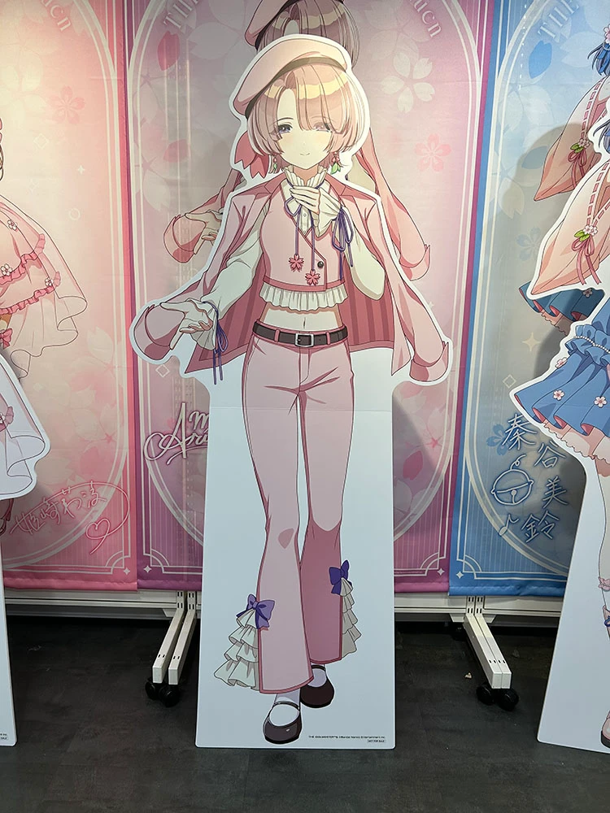

もし時間を戻せるなら、もう一度秋生としてHALに入学したいですか？理由は？ :したくない、また同じ科目を受けたら科目累年になるかもしれないから
プレデターが追い込むとどうしますか？ ：嫌な人々がたくさんいる所まで逃げて、そこで身を隠す
もし過去に戻ったら何年前に戻りたい ：できるなら5歳（しんのすけとタメ）
最後の晩餐に欠かせない一品 ：ハンバーガー、ピザ、ラーメンなど、とにかく体に悪いもののうち一品
ゴジラが襲撃するとどうする？ ：ゴジラの踵にくっつく
もし生まれる国を選べるなら、どの国に生まれたいですか？ ：ワカンダ
自分の人生への一言 ：諦めるにはまだ早い
この世界で一番好きな人は誰ですか？ ：お母さん
もし転生したら異世界の中でどんな職業をやりますか？ ：酒場ののんべえ
無駄に頑張ったことはなに？ 前の職場で無駄に働いたこと
もし五感（聴覚・視覚・触覚・味覚・嗅覚）を順番に失っていくとしたら、どんな順番が一番辛くないと思いますか？：味覚→嗅覚→触覚→聴覚→視覚
小学校に入学したばかりの自分に声をかけられるとしたら、何を言いたいですか？ ：トイレはしっかり行こう